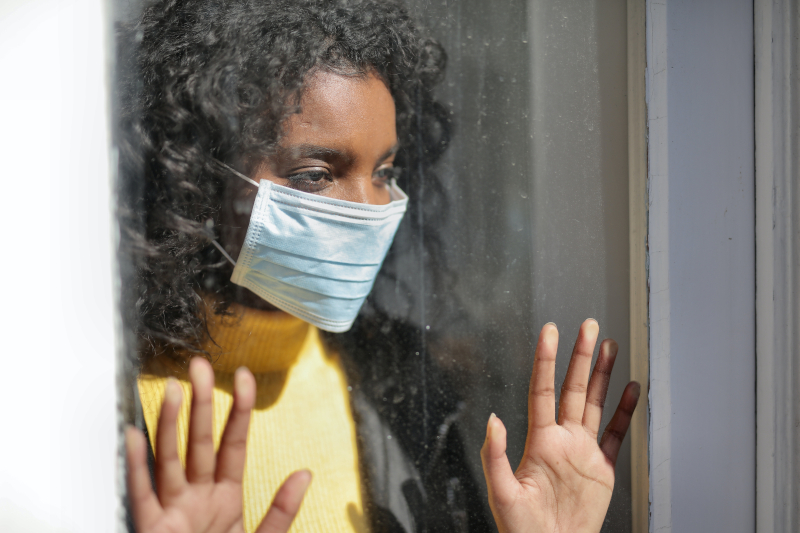

April 12, 2020
Lockdown lessons for restless Karachi from around the globe
People of various parts of the world stress taking COVID-19 threat seriously
© Andrea Piacquadio
The place where a person lives shapes them as much as they shape it. Karachi is a vibrant metropolis, and its people are no less lively. Whatever happens to the city happens to us, and vice versa.
So, it’s no wonder the people of this City of Lights feel restless as the lockdown imposed by the government in the wake of the COVID-19 pandemic continues to keep them indoors almost all the time.
Yes, we’re social animals, but right now we need to do all our socialising in the digital world, the only safe space available these days — if you ignore all the propaganda, rumours and downright fake news circulating around the cyberspace.
It can be hard to control the generation of such harmful content because the devil makes work for idle hands. And right now, due to the lockdown, the devil has access to myriad idle hands.
Such content can be especially dangerous because it tends to downplay the novel coronavirus emergency. But the generators and believers of such content need to take stock of the situation and overcome their myopia.
We’re not the only ones to have been inconvenienced by this crisis. People around the globe — people just like us — are also hanging in there. And they have advice and experiences to share with us.
Whether or not we take comfort from their words is up to us. But we need to be kind to ourselves and others. Because kindness is also contagious. And the way things are everywhere at present, it’s the only thing we should be spreading.
Be considerate
Darylyn A of Winnipeg (Manitoban capital in Canada) is a freelance artist, video editor and personal shopper. She can’t stay home all the time because she works at a grocery store.
Compared to other provinces, the lockdown isn’t too strict in Manitoba yet, but non-essential businesses like shopping centres have been closed. Extra measures have been taken everywhere to implement social distancing and sanitation.
These measures include allowing only two to 10 shoppers in every store, with one or two shoppers from each family. And it’s mandatory to wash your hands before entering the store.
For people who work at two or more places involving health care, they have been forced to choose one job and have been advised to be ready for the possibility of a total lockdown.
This means they’ll be forced to live temporarily at their workplace. This is to prevent the spread of the virus to those whose health is compromised.
“Everything is pretty much operating online now to avoid person-to-person contact, and government businesses like insurance offices have been turned into testing centres,” she says.
There are no more walk-ins in hospitals, no clinics, no flights, no parks, no gyms and no places for religious gatherings. Restaurants and other food outlets have been restricted to drive-throughs, takeaways and deliveries.
“Almost everyone has either been laid off or is working from home. Extreme measures will most likely be implemented soon. Right now, the borders are closed, flights have been cancelled, and only citizens and permanent residents can enter the country.”
She says the virus is a serious matter, and advises the people of Karachi to frequently use disinfectants, wash our hands and stay at home, or if we need to be outside, observe social distancing.
“Try to remain as healthy as possible, and also be considerate of others. There’s no treatment as of now, and the only ones recovering are the ones whose health isn’t compromised, so be extra careful!”
Be smart
Arij of El Haouaria (north-eastern Tunisian coastal town) is a computer science student. She says people in this small town and the villages around are not so aware of the situation.
“It’s like they’re still waiting for the danger,” she says. “But many people are observing self-isolation. I haven’t seen my relatives for three weeks now.”
Her advice for us is to be smart and be aware. “Staying at home will help stop this virus or at the very least, limit it. Help save yourselves and your families!”
Protect the elderly
Anna Bjorkman of Stockholm (Swedish capital) is a procurement engineer at a construction company. Her city has the highest number of COVID-19 cases in the country.
People have been asked to work from home and avoid using public transport as much as possible. Gatherings of more than 50 people have been banned.
Those over the age of 70 have been told to stay at home and avoid seeing other people. They are, however, encouraged to take walks and get fresh air, as long as they keep their distance from other people.
Restaurants, cafes and other such establishments are still open, but their customers must keep a good distance from each other. Universities and other educational institutions for children over the age of 16 have been closed. People have been told they should not travel.
Her advice for us is to protect the elderly because they are the most vulnerable to the virus. She stresses that we should listen to the recommendations of our authorities and health experts. “Take this seriously!”
Help the helpless
Maddie of Vermont (north-eastern US state) is a student. They say there’s a stay-at-home order in Vermont as well. Non-essential businesses have been closed until further notice. Schools have been closed for the year, and everything is now being operated online only.
“Due to that, classes and normal work is nearly impossible, especially for the vulnerable among us,” they say. “We’re facing the risk of shortage of medical supplies, and we’re already short on hand sanitisers, bleach, alcohol wipes, toilet paper and other such things.”
They say that this is something to take seriously for all the people of Pakistan as a whole. To keep everyone safe, they stress exercising caution. If it does hit hard, their advice is not to buy out stocks and to buy only what we need.
“Help those around you who can’t help themselves: the elderly, the disabled, the immunocompromised; don’t forget about them! If you think you have the virus, get tested. Testing must be free and easily accessible. No one should be charged for trying to keep everyone safe.”
A small sacrifice
Michele of Maryland (eastern US state) is a social worker and she’s employed by the state government. She estimates that the number of deaths due to COVID-19 is expected to shoot to 100,000 and maybe spike to 240,000. “It’s very scary!”
In Maryland they have a stay-at-home order, but they can leave their houses for food, medicines and medical appointments. “My advice to your people is to stay home, wash your hands, practise social distancing. It’s a small sacrifice for a short period of time that will save many lives.”
Corrosive virus
Karolina Biala of Jastrzebie-Zdroj (south Polish city) is an economist. She says the country’s first case of COVID-19 was confirmed by the government on March 4. Schools were closed on March 12. And the country’s boundaries were closed to foreigners on March 15.
“At the moment, there are many regulations that influence our living,” she says. “We have been told to stay home. There’s a ban on gatherings. We can go outside only if it’s something important.”
All stores, galleries and markets, except those selling food or medicines, are closed. They can go shopping only if they’re wearing gloves. The number of people inside the shops has also been restricted.
For the elderly, she says, the government has decided on separate timings, during which only they can go shopping and other people cannot be served.
Many workplaces have been closed, but those that still remain open, must make special sanitary arrangements for their workers. Some penalties have also been introduced for those who defy the rules.
Her advice for us is to take the risk seriously. “This virus is very corrosive,” she says. Even though the elderly are the most vulnerable, she says, young people with other diseases are at risk too. “Who doesn’t know someone with diabetes or hypertension? Take care of yourself!”
Don’t be afraid
Ana S of Belgrade (Serbian capital) is a translator. She says that all commercial flights to and from Serbia have been suspended indefinitely. All border crossings — air, land and water — have been closed. The government has declared a state of emergency, with widespread travel restrictions and curfews.
Since April 3, there has been a mandatory curfew for all residents between 5pm and 5am from Monday to Friday, and from 1pm on Saturday until 5am on Monday. Exemptions are allowed only to those with medical urgencies and those with a work permit or special authorisation from the authorities.
There has also been an almost 24-hour curfew for residents over the age of 65 in the urban areas and over the age of 70 in the rural areas, except between 3am and 8am on Saturdays for the purpose of buying groceries.
All farmers markets have been closed. Some farmers offer home deliveries of their products in her city. All public transport has been suspended, but taxi services remain operational, although they’re limited. Driving personal vehicles is also allowed.
Cafes, restaurants and shopping centres have been closed, but some provide takeaways and deliveries. All sports-related facilities, senior care centres, kindergartens, schools and universities have been closed. Barbershops and beauty parlours have also been closed.
Public gatherings are limited to no more than two persons. People have been told to maintain a distance of at least 6.6 feet between each other. Occupancy for all indoor facilities opened to public is limited to 43 square feet per person.
All public parks and recreational areas have been closed. Supermarkets, pharmacies, filling stations, post offices, banks and other service providers have reduced their working hours to comply with the curfew orders, with most of them closing by 3pm or earlier.
Her advice for us is to stay home for the sake of others, and to refrain from going out unless absolutely necessary. “You should not be afraid, and when you go out, you should wear masks or scarves and protective gloves.”
Don’t inhale steam
Claire of Grenoble (south-eastern French city) is an aide medico-psychologique (a paramedical professional who assists people in acts of everyday life). Her people have been advised to wash their hands regularly and wear masks, but they are running short on masks.
“If we get sick due to COVID-19,” she says, “we have to lock ourselves up in a room and wait for the symptoms to pass, because it doesn’t get worse in most cases. If it gets worse, we have to go to the hospital.”
Lockdown is in place in her city, as in all of France. They have to limit their outdoor activities, including meeting people. They can shop for food, and take their dogs out for walks.
They must observe a distance of two metres (approximately 6.6 feet) between each other. They can go running and play sports outdoors, but they’re allowed only an hour and within a one-kilometre radius of their houses.
They can no longer shake hands or do faire la bise (a social gesture of kissing cheeks). Majority of the locals no longer go in to work because they have been telecommuting (working from home).
Her advice for us is to avoid meeting other people as much as possible. “Protect your face with a mask and wash your hands regularly. Wash your clothes every day after going out. And even wear gloves.”
She also advises against seeing our family members if they don’t live in the same house as ours, because we may already be carrying the virus long before showing any symptoms, so we can probably infect them if we’re careless.
“Avoid going out as much as possible while the threat of the virus is still present. You should also avoid using nasal spray drugs, inhaling steam and taking anti-inflammatory drugs.”
First published in The News International